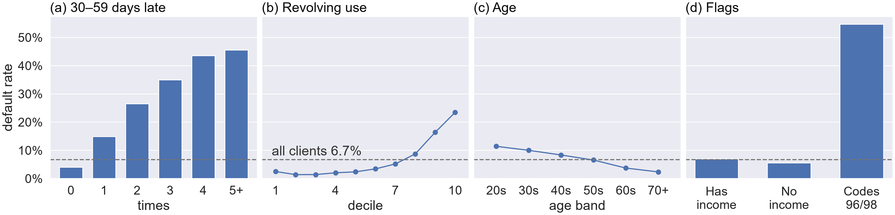
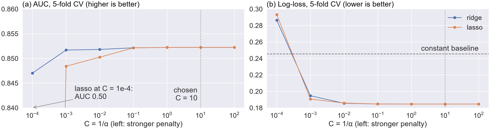
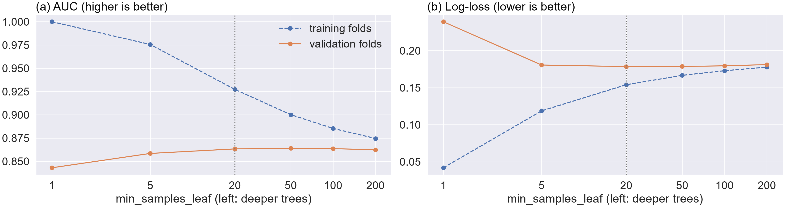
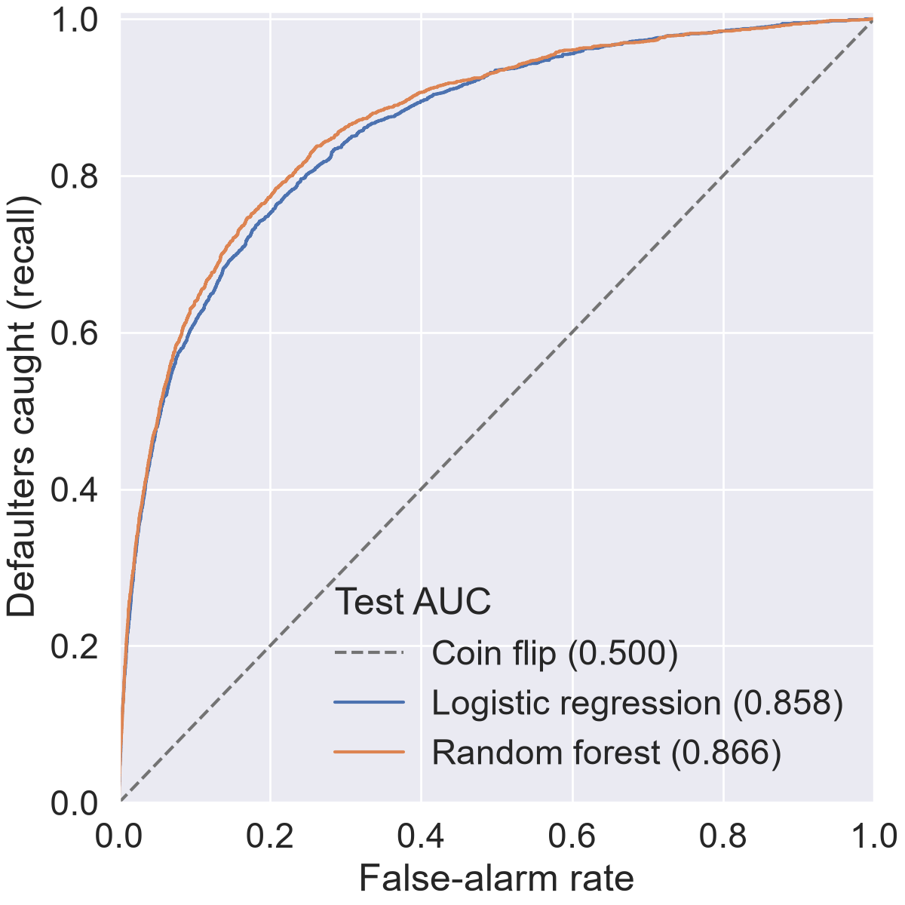
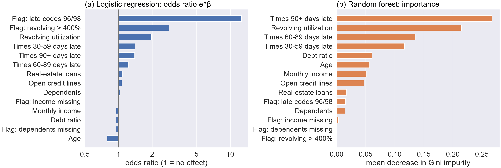

Predicting credit delinquency
Launched on Kaggle in 2011 with one goal “improve on the state of the art in credit scoring by predicting the probability that somebody will experience financial distress in the next two years.”
Competition page kaggle.com/c/GiveMeSomeCredit
My question: can we rank applicants by their risk, and how much ranking power does an explainable model give up?
02

Past late payments and heavy use of revolving credit raise the risk sharply, and older clients default less. Panel (d) shows the flags I created in the EDA: they carry signal of their own.
03
CHALLENGE
WHAT I FOUND
WHAT I DID
01
Impossible values
Age 0 (1 client); revolving use up to 50,708× the credit limit (264 clients above 4×)
Set to missing; a flag for revolving above 400%
02
Codes posing as counts
Late counts jump from ≤17 to 96 and 98: 269 clients, all three columns, 55% default
Set to missing; one flag for the codes
03
A ratio without its denominator
Income missing for 29,731 clients (20%); their median debt ratio is 1,159 vs 0.30
Debt ratio set to missing when income is
04
Missing values that inform
No income: 5.6% default vs 6.9%; dependents are missing only when income is
Flags, instead of imputing the signal away
05
Long tails
Skewness of 127 (income) and 81 (debt ratio)
log(1 + x) for the logistic regression
06
A leak in my own EDA
I first imputed medians using all rows, test rows included
Every step that learns moved inside the pipeline
04
05

With 120,000 rows and 14 coefficients there is nothing to shrink: ridge and lasso tie for C ≥ 0.1, and the chosen C = 10 is barely penalized. A strong ridge still ranks well (AUC 0.847) but its probabilities are worse than a constant, so I choose by log-loss. log(1 + x) helped a little (0.851 → 0.852); quantile bins added only 0.003.
06

With leaves of 1 client the trees memorize the training folds (AUC 1.000) and validate worst (0.843): overfitting. Larger leaves trade variance for bias; 20 clients per leaf gives the lowest validation log-loss (AUC 0.863). The 300 trees and √p features per split were fixed, not tuned.
07

On 30,000 clients never used for any choice, the forest reaches an AUC of 0.866 and the logistic regression 0.858 (Gini 0.73 and 0.72), close to their cross-validated scores: no sign of leakage.
With a cut-off chosen in cross-validation to catch 70% of defaulters:
| Model | Approved | Bad rate of approved | Good payers refused |
|---|---|---|---|
| Logistic regression | 80.0% | 2.4% | 4,590 |
| Random forest | 82.1% | 2.4% | 3,949 |
Approving four in five applicants cuts the bad rate from 6.7% to 2.4%. At the same bad rate, the forest approves 649 more customers.
08

Both models agree. The flag for codes 96/98 multiplies the odds by 12.6, so the cleaning paid off; age lowers the risk, a fairness question (Lecture 9).
09
Thank you!